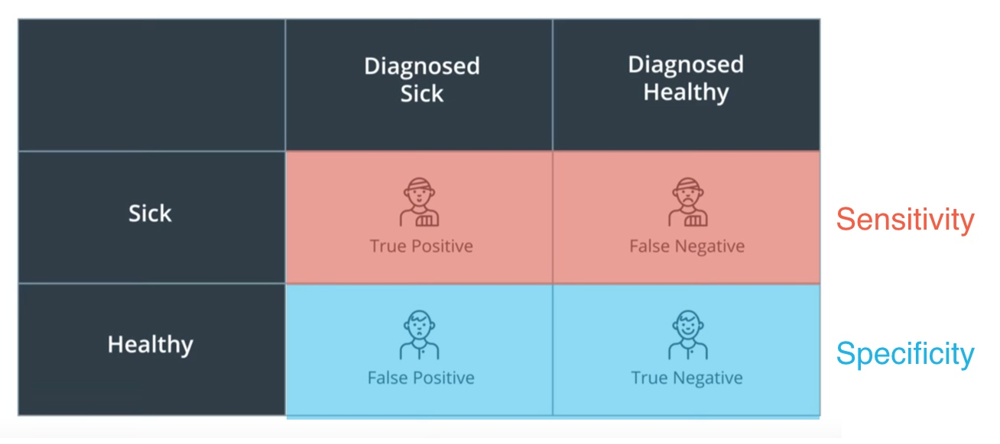

一、分类模型
1、混淆矩阵
在机器学习领域，混淆矩阵(confusion matrix), 又称为可能性表格或者错误矩阵。它是一种特定的矩阵用来呈现算法性能的可视化效果，通常是监督学习（非监督学习，通常用匹配矩阵：matching matrix）。其每一列代表预测值，每一行代表的是实际的类别。

from skleran.metrics import confusion_matrix
confmat = confusion_matrix(y_true=y_test, y_pred=y_pred)
print(confmat)2、预测误差和准确率
预测误差（error，ERR）和准确率（accuracy，ACC）都提供了误分类样本数量的相关信息。误差可以理解为预测错误样本的数量与所有被预测样本数量的比值，而准确率计算方法则是正确预测样本的数量与所有被预测样本数量的比值:
$$
ERR = \frac {FP + FN}{FP + FN + TP + TN}
$$
预测准确率也可以通过误差直接计算：
$$
ACC = \frac{TP + TN}{FP + FN + TP + TN} = 1 - ERR
$$
from sklearn.metrics import accuracy_score
accuracy_score(y_true, y_pred)对于类别数量不均衡的分类问题来说，真正率（TPR）与假正率（FPR）是非常有用的性能指标：
$$
FPR = \frac{FP}{N} = \frac{FP}{FP + TN}
$$
$$
TPR = \frac{TP}{P} = \frac{TP}{TP + FN}
$$
3、精确率和召回率
精确率是针对我们预测结果而言的，它表示的是预测为正的样本中有多少是真正的正样本。那么预测为正就有两种可能了，一种就是把正类预测为正类(TP)，另一种就是把负类预测为正类(FP)，也就是:
$$
P = \frac{TP}{TP + FP}
$$
而召回率是针对我们原来的样本而言的，它表示的是样本中的正例有多少被预测正确了。那也有两种可能，一种是把原来的正类预测成正类(TP)，另一种就是把原来的正类预测为负类(FN)。
$$
R = \frac {TP}{TP + FN}
$$
在信息检索领域，精确率和召回率又被称为查准率和查全率，
查准率＝检索出的相关信息量 / 检索出的信息总量
查全率＝检索出的相关信息量 / 系统中的相关信息总量
4、敏感性和特异性
医疗领域的混淆矩阵:

敏感性和特异性是这个矩阵中的行。更具体地说，如果我们做以下标记
- TP：（真阳性）被正确诊断为患病的病人。
- TN：（真阴性）被正确诊断为健康的健康人。
- FP：（假阳性）被错误诊断为患病的健康人。
- FN：（假阴性）被错误诊断为健康的病人。
那么：
$$
敏感性 =\frac{TP}{TP+FN}
$$
$$
特异性 = \frac{TN}{TN+FP}
$$
敏感性和特异性虽然与查准率和查全率相似，但并不相同。其定义如下：
在癌症示例中，敏感性和特异性指：
- 敏感性：在患有癌症的所有人中，诊断正确的人有多少？
- 特异性：在未患癌症的所有人中，诊断正确的人有多少？
查准率和查全率的定义如下：
- 查全率：在被诊断患有癌症的所有人中，多少人确实得了癌症？
- 查准率：在患有癌症的所有人中，多少人被诊断患有癌症？
从这里可以看出，敏感性就是查全率，但特异性并不是查准率。
5、$F_1$和$F_\beta$
把精确率和召回率合成一个值，根据精确率和召回率权重的不同可以分为$F_1$和$F_\beta$
算术平均数 Arithmetic Mean = (x+y)/2
调和平均数 Harmonic Mean = (2xy)/(x+y)
调和平均数始终小于算术平均数，因为调和平均数更接近较小的数
$F_1$值的计算公式如下:
$$
F_1 = \frac{2}{\frac{1}{precision} + \frac{1}{recall}} = \frac{2precisionrecall}{presicion + recall}
$$
$F_1$值就是精确率和召回率的调和平均值，$F_1$值认为精确率和召回率一样重要。
$F_\beta$值的计算公式如下:
$$
F_1 = \frac{1 + \beta^2}{\frac{1}{precision} + \frac{\beta^2}{recall}} = \frac{(1+\beta^2)precisionrecall}{\beta^2*presicion + recall}
$$
β 的界限在 0 和 ∞ 之间。如果β=0, 则得出精度。如果β=∞, 则得出召回率
在β=1时，$F_β$就是$F_1$值，此时$F_β$认为精确率和召回率一样重要；当β>1时，$F_1$认为召回率更重要；当0<β<1时，认为精确$F_β$率更重要。除了$F_1$值之外，常用的还有$F_2$和$F_{0.5}$。
6、ROC曲线及AUC值
AUC全称为Area Under Curve，表示一条曲线下面的面积，ROC曲线的AUC值可以用来对模型进行评价。ROC曲线如图所示：

ROC曲线的纵坐标True Positive Rate（TPR）在数值上就等于positive class的recall，记作$recall_{positive}$，横坐标False Positive Rate（FPR）在数值上等于(1 - negative class的recall)，记作(1 - $recall_{negative}$)如下所示：
$$
TPR = \frac{TP}{P} = \frac{TP}{TP + FN} = recall_{positive}
$$
$$
FPR = \frac{FP}{FP + TN} = \frac{FP+TN-TN}{FP+TN} = 1 - \frac{TN}{FP + TN} = 1 - recall_{negative}
$$
通过对分类阈值θ（默认0.5）从大到小或者从小到大依次取值，我们可以得到很多组TPR和FPR的值，将其在图像中依次画出就可以得到一条ROC曲线，阈值θ取值范围为[0,1]。
ROC曲线在图像上越接近左上角(0,1)模型越好，即ROC曲线下面与横轴和直线FPR = 1围成的面积（AUC值）越大越好。直观上理解，纵坐标TPR就是$recall_{positive}$值，横坐标FPR就是(1 - $recall_{negative}$)，前者越大越好，后者整体越小越好，在图像上表示就是曲线越接近左上角(0,1)坐标越好。
图展示了３个模型的ROC曲线，要知道哪个模型更好，则需要计算每条曲线的AUC值，一般认为AUC值越大越好。AUC值由定义通过计算ROC曲线、横轴和直线FPR = 1三者围成的面积即可得到。
ROC曲线上几个关键点的解释：
( TPR=0,FPR=0 ) 把每个实例都预测为负类的模型
( TPR=1,FPR=1 ) 把每个实例都预测为正类的模型
( TPR=1,FPR=0 ) 理想模型
二、回归模型
1、平均绝对误差(Mean Absolute Error)
from sklearn.metrics import mean_absolute_error
from sklearn.linear_model import LinearRression
classifier = LinearRression()
classifier.fit(X, y)
guesses = classifier.predict(X)
error = mean_absolute_error(y, guesses)MAE问题：绝对值函数是不可微分的，不利于使用梯度下降等方法
解决：均方误差
2、平均平方误差(Mean Squared Error)
from sklearn.metrics import mean_square_error
from sklearn.linear_model import LinearRression
classifier = LinearRression()
classifier.fit(X, y)
guesses = classifier.predict(X)
error = mean_square_error(y, guesses)3、决定系数($R^2$ )
$R^2$分数通过将我们的模型与最简单的可能模型相比得出。那么思考一下，拟合一堆点的最简单的可能模型是什么呢？那就是取所有值的平均值,然后我们可以计算出这个模型的均方误差。
R2 = 1 - (线性回归模型误差/简单模型误差)
如果这个模型不太好 这两个误差将很接近而这个量应接近 1，那么整个 R2 分数应接近 0。
如果模型较好 那么线性回归模型对的均方误差应比简单模型的均方误差小很多，那么这个比例就很小。而 R2 分数将非常接近 1，总结来说 如果 R2 分数接近 1 模型就不错。
from sklearn.metrics import r2_score
r2_score(y_true, y_pred)三、参考
https://www.zhihu.com/question/19645541/answer/91694636
https://www.zhihu.com/question/30750849
https://www.cnblogs.com/wuliytTaotao/p/9285227.html
https://www.cnblogs.com/gatherstars/p/6084696.html
https://blog.csdn.net/weixin_41043240/article/details/80265577